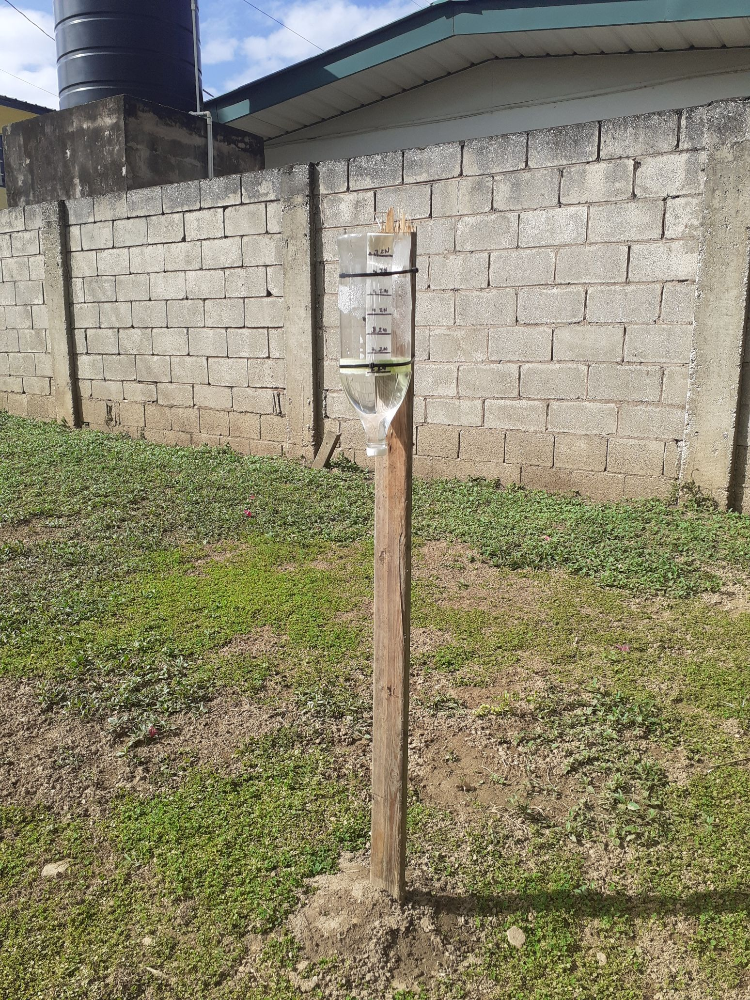
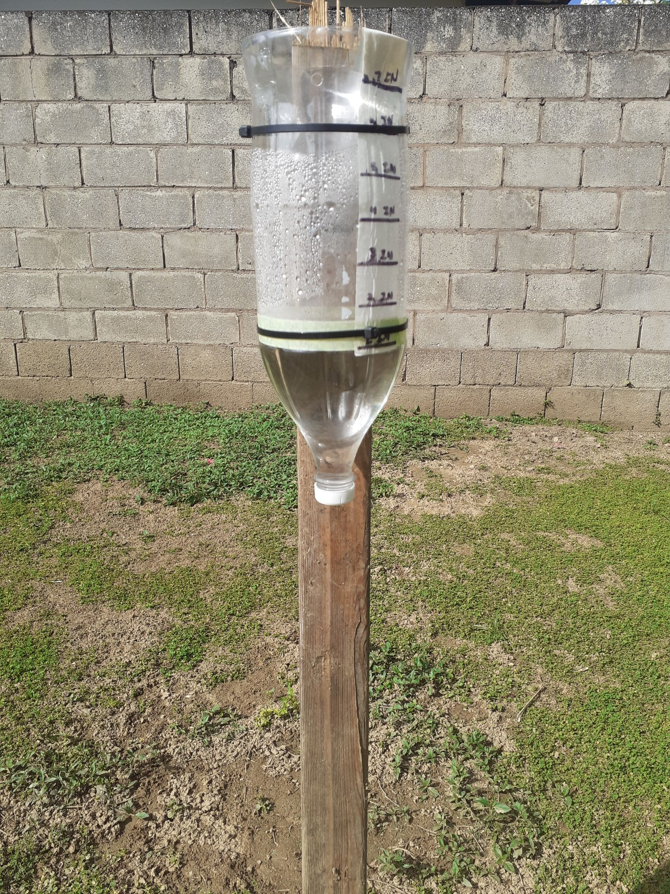
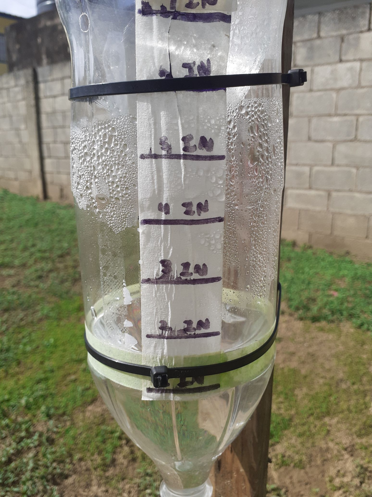

Ringo Rain Gauge
PROJECTS
ABOUT
The main objective of this project is to keep a weekly recoding of the rains through out the dry season of 2022. Also testing out a few theories on night chill and the soil moisture. Weeks start at every Woo Back Wednesday.
Recording start: 22/1/27
Gauge Statistics
► 4.5In Diameter
► 5.8In Measure Offset
► 5.2In Measurement Height
► 41.8In Offset from floor
  